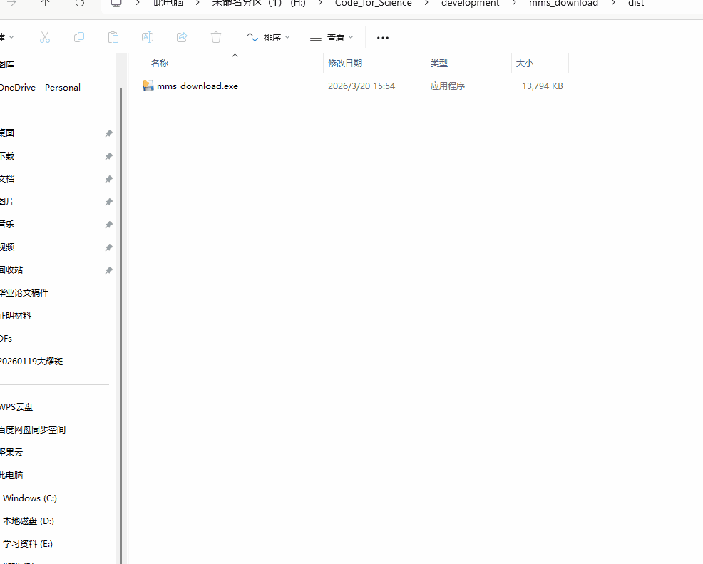

运行演示

演示：批量下载 MMS1 FGM burst 数据，文件自动按日期目录保存。支持多通道下载，支持多数据同时下载
注释：文件名称是数据文件的标签文件，也就是数据文件时间戳前面那一部分。不同的数据请用英文的分号分隔开“;”
适用场景
- MMS FGM、FPI、SCM 等仪器 burst/survey 模式数据批量获取
- 处理 NASA SPDF 服务器偶尔 404 或子目录变化的问题
- 科研笔记/项目中需要可靠、可复现的数据下载流程

演示：批量下载 MMS1 FGM burst 数据，文件自动按日期目录保存。支持多通道下载，支持多数据同时下载
注释：文件名称是数据文件的标签文件，也就是数据文件时间戳前面那一部分。不同的数据请用英文的分号分隔开“;”